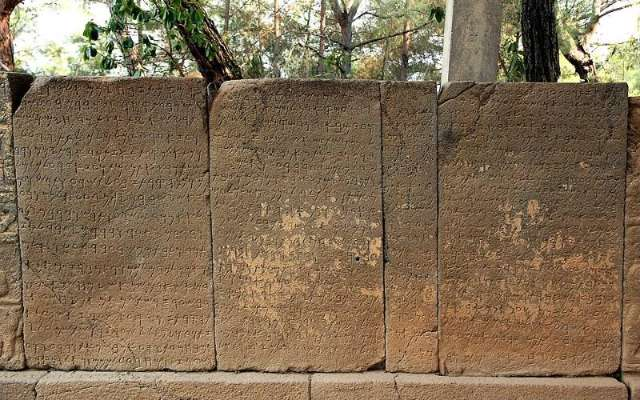

हित्ती और उत्तर-हित्ती राज्य. मध्य अनातोलिया से सीरिया तक फैला हित्ती साम्राज्य प्राचीन निकट-पूर्व की महाशक्तियों में से एक था। ई.पू. 17वीं शताब्दी से हित्तियों ने मध्य अनातोलिया में एक शक्तिशाली राज्य बनाया, जिसकी राजधानी हत्तुशा आज चोरुम प्रांत के बोआज़काले ज़िले में है। मिट्टी की पट्टिकाओं पर कीलाक्षर लिपि में लिखी हित्ती भाषा ज्ञात सबसे पुरानी हिंद-यूरोपीय भाषाओं में से एक है। हत्तुशा का सिंह द्वार, राजा द्वार, महान मंदिर और पास का याज़िलीकाया खुला पवित्र स्थल 1986 से यूनेस्को विश्व धरोहर सूची में हैं। ई.पू. 13वीं शताब्दी में हित्ती राजा हत्तुसिली तृतीय और मिस्र के फ़राओ रामसेस द्वितीय के बीच हुई कादेश संधि को ज्ञात सबसे पुरानी लिखित शांति संधियों में गिना जाता है; इसकी मिट्टी की एक प्रति इस्तांबुल पुरातत्व संग्रहालयों में प्रदर्शित है। हित्तियों से पहले कायसेरी के पास क्युलतेपे (कानेश) असीरियाई व्यापारियों का व्यापार केंद्र था, और वहाँ की पट्टिकाएँ अनातोलिया के सबसे पुराने लिखित दस्तावेज़ों में हैं। लगभग ई.पू. 1200 में हित्ती साम्राज्य के पतन के बाद दक्षिण-पूर्व में उत्तर-हित्ती राज्य उभरे। ओस्मानिये का कराटेपे-अस्लानताश, गाज़ियांतेप की येसेमेक खदान और मूर्ति कार्यशाला तथा 2021 से यूनेस्को सूचीबद्ध मलात्या का अर्सलानतेपे इस युग के प्रमुख स्थल हैं। हित्ती कृतियों का सबसे समृद्ध संग्रह अंकारा के अनातोलियाई सभ्यता संग्रहालय में है; चोरुम और बोआज़क्योय संग्रहालय भी अवश्य देखें।
मध्य अनातोलिया से सीरिया तक फैला हित्ती साम्राज्य प्राचीन निकट-पूर्व की महाशक्तियों में से एक था।
ई.पू. 17वीं शताब्दी से हित्तियों ने मध्य अनातोलिया में एक शक्तिशाली राज्य बनाया, जिसकी राजधानी हत्तुशा आज चोरुम प्रांत के बोआज़काले ज़िले में है। मिट्टी की पट्टिकाओं पर कीलाक्षर लिपि में लिखी हित्ती भाषा ज्ञात सबसे पुरानी हिंद-यूरोपीय भाषाओं में से एक है। हत्तुशा का सिंह द्वार, राजा द्वार, महान मंदिर और पास का याज़िलीकाया खुला पवित्र स्थल 1986 से यूनेस्को विश्व धरोहर सूची में हैं।
ई.पू. 13वीं शताब्दी में हित्ती राजा हत्तुसिली तृतीय और मिस्र के फ़राओ रामसेस द्वितीय के बीच हुई कादेश संधि को ज्ञात सबसे पुरानी लिखित शांति संधियों में गिना जाता है; इसकी मिट्टी की एक प्रति इस्तांबुल पुरातत्व संग्रहालयों में प्रदर्शित है। हित्तियों से पहले कायसेरी के पास क्युलतेपे (कानेश) असीरियाई व्यापारियों का व्यापार केंद्र था, और वहाँ की पट्टिकाएँ अनातोलिया के सबसे पुराने लिखित दस्तावेज़ों में हैं।
लगभग ई.पू. 1200 में हित्ती साम्राज्य के पतन के बाद दक्षिण-पूर्व में उत्तर-हित्ती राज्य उभरे। ओस्मानिये का कराटेपे-अस्लानताश, गाज़ियांतेप की येसेमेक खदान और मूर्ति कार्यशाला तथा 2021 से यूनेस्को सूचीबद्ध मलात्या का अर्सलानतेपे इस युग के प्रमुख स्थल हैं। हित्ती कृतियों का सबसे समृद्ध संग्रह अंकारा के अनातोलियाई सभ्यता संग्रहालय में है; चोरुम और बोआज़क्योय संग्रहालय भी अवश्य देखें।
यह युग कहाँ देखें
 हत्तूसाचोरुम
हत्तूसाचोरुम बोआज़कोय संग्रहालयचोरुम
बोआज़कोय संग्रहालयचोरुम अलाजाह्यूयुक संग्रहालय और पुरातात्विक स्थलचोरुम
अलाजाह्यूयुक संग्रहालय और पुरातात्विक स्थलचोरुम चोरुम संग्रहालयचोरुम
चोरुम संग्रहालयचोरुम क्यूल्तेपे पुरातात्विक स्थलकायसेरी
क्यूल्तेपे पुरातात्विक स्थलकायसेरी अनातोलियाई सभ्यता संग्रहालयअंकारा
अनातोलियाई सभ्यता संग्रहालयअंकारा इस्तांबुल पुरातत्व संग्रहालयइस्तांबुल
इस्तांबुल पुरातत्व संग्रहालयइस्तांबुल
कराटेपे-अस्लानताश संग्रहालय और पुरातात्विक स्थलओस्मानिये येसेमेक पुरातात्विक स्थलगाज़ियांतेप
येसेमेक पुरातात्विक स्थलगाज़ियांतेप अर्सलानतेपे पुरातात्विक स्थलमालात्या
अर्सलानतेपे पुरातात्विक स्थलमालात्या🎓 खुद को परखें
1. हित्ती राजधानी हत्तुशा आज किस प्रांत में है?
2. कादेश संधि हित्तियों और किस राज्य के बीच हुई?
3. हत्तुशा के पास के खुले पवित्र स्थल का नाम क्या है?
4. क्युलतेपे (कानेश) किन व्यापारियों का व्यापार केंद्र था?